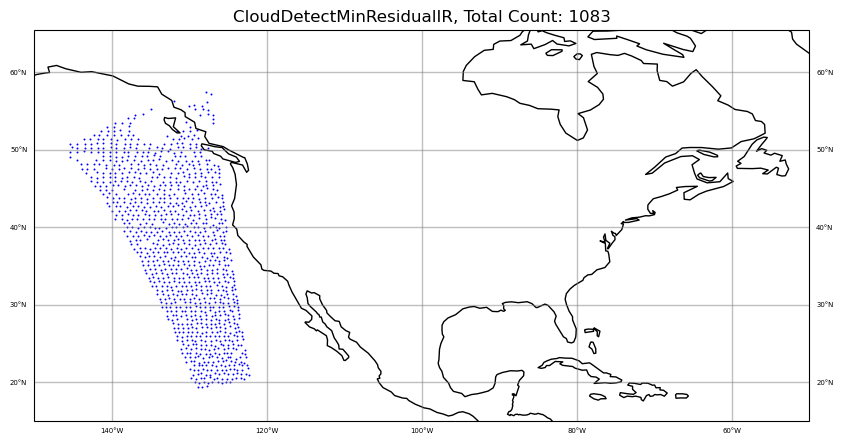
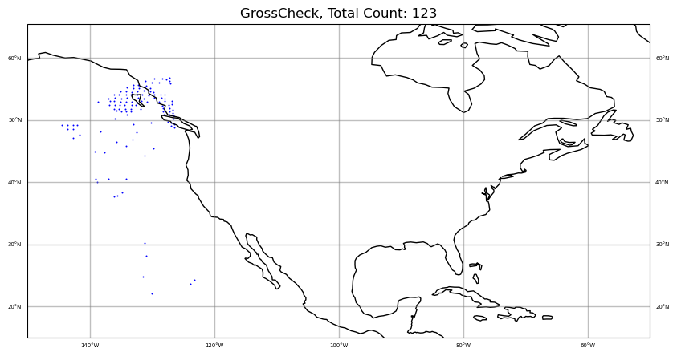
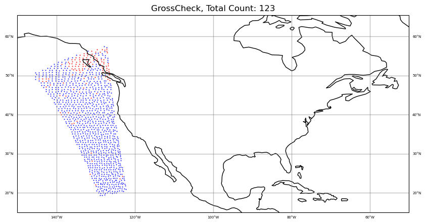
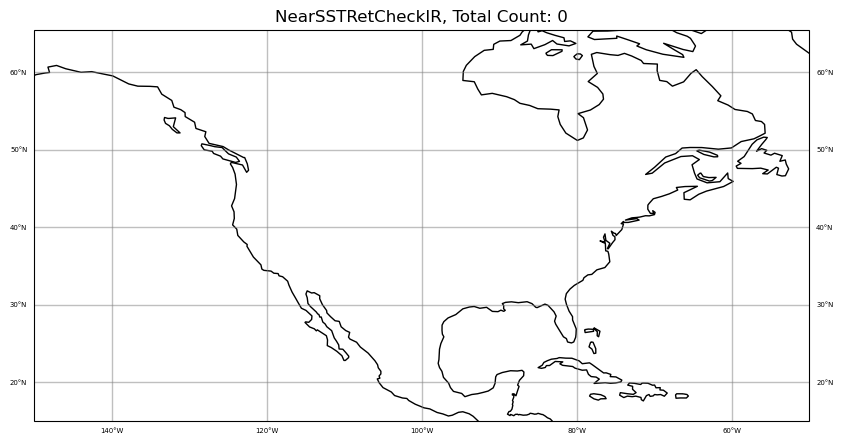
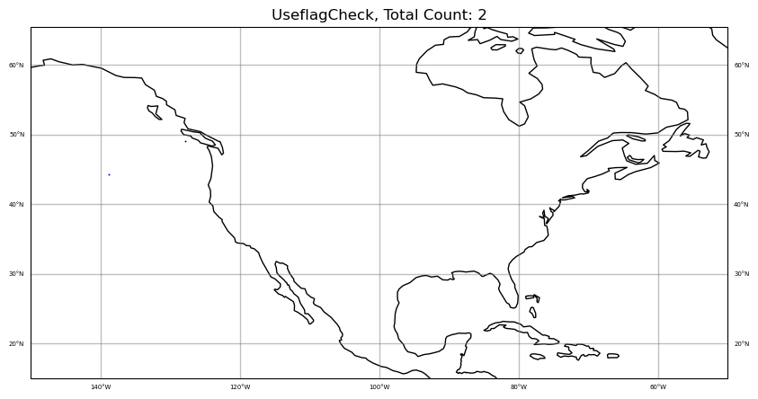

plot the QC filter results for satellite DA (cris-fsr#
Adapted from Haidao Lin’s script
get the pyDAmonitor_ROOT env variable#
This step is highly recommended. It is required if one want to use the DAmonitor Python package or use the MPAS/FV3 sample data or local cartopy nature_earth_data.
%%time
# autoload external python modules if they changed
%load_ext autoreload
%autoreload 2
import sys, os
pyDAmonitor_ROOT=os.getenv("pyDAmonitor_ROOT")
if pyDAmonitor_ROOT is None:
print("!!! pyDAmonitor_ROOT is NOT set. Run `source ush/load_pyDAmonitor.sh`")
else:
print(f"pyDAmonitor_ROOT={pyDAmonitor_ROOT}\n")
sys.path.insert(0, pyDAmonitor_ROOT)
pyDAmonitor_ROOT=/home/Guoqing.Ge/pyDAmonitor
CPU times: user 14 ms, sys: 62.8 ms, total: 76.8 ms
Wall time: 114 ms
import modules#
%%time
from netCDF4 import Dataset
import cartopy
cartopy.config['data_dir'] = f"{pyDAmonitor_ROOT}/data/natural_earth_data"
import cartopy.crs as ccrs
import matplotlib.ticker as mticker
import matplotlib.pyplot as plt
import numpy as np
#matplotlib.use("Agg")
%matplotlib inline
from DAmonitor.base import query_data, query_dataset, query_obj, to_dataframe
from DAmonitor.obs import obsSpace
CPU times: user 402 ms, sys: 251 ms, total: 654 ms
Wall time: 814 ms
read satellite diagnostics using the obsSpace class#
%%time
obsfile = os.path.join(pyDAmonitor_ROOT,'data/mpasjedi/jdiag_cris-fsr_n20.nc')
obs = obsSpace(obsfile)
CPU times: user 3.16 s, sys: 5.18 s, total: 8.35 s
Wall time: 8.65 s
check attributes, dimensions and the ‘bt’ data dictionary#
for attr in obs.ds.ncattrs():
print(f'{attr}: {obs.ds.getncattr(attr)}')
obs.ds.dimensions
converter: BUFR
platformCommonName: CRIS
_ioda_layout_version: 0
sourceFiles: gdas.t00z.crisf4.tm00.bufr_d
datetimeReference: 2021-08-01T00:00:00Z
source: MTYP 021-206 CrIS FULL SPCTRL RADIANCE (431 CHN SUBSET)
sensor: CrIS
_ioda_layout: ObsGroup
platformLongDescription: JPSS Polar System in sunsynchronous orbit
{'Channel': "<class 'netCDF4.Dimension'>": name = 'Channel', size = 431,
'Location': "<class 'netCDF4.Dimension'>" (unlimited): name = 'Location', size = 92878}
query_data(obs.bt, meta_exclude="sensorCentralWavenumber_")
DerivedObsError, DerivedObsValue, CloudDetectMinResidualIR, NearSSTRetCheckIR, ScanEdgeRemoval, GrossCheck, Thinning, UseflagCheck, EffectiveError0, EffectiveError1, EffectiveError2, EffectiveQC0, EffectiveQC1, EffectiveQC2, sensorZenithAngle, satelliteIdentifier, sensorScanPosition, instrumentIdentifier, longitude, latitude, sensorViewAngle, scanLineNumber, solarZenithAngle, sensorChannelNumber, sensorAzimuthAngle, fieldOfViewNumber, dateTime, solarAzimuthAngle, ObsBias0, ObsBias1, ObsBias2, constantPredictor, emissivityJacobianPredictor, hofx0, hofx1, hofx2, innov1, lapseRatePredictor, lapseRate_order_2Predictor, oman, ombg, sensorScanAnglePredictor, sensorScanAngle_order_2Predictor, sensorScanAngle_order_3Predictor, sensorScanAngle_order_4Predictor, Channel, Location
obs.bt.CloudDetectMinResidualIR.compressed()
array([1, 1, 1, ..., 1, 1, 1], shape=(304246,), dtype=int8)
find channels with valid ombg masked by CloudDetectMinResidualIR==1#
MAX_LINES = 20
knt = 0
for iChan, chanID in enumerate(obs.bt.Channel):
mask = obs.bt.CloudDetectMinResidualIR[:, iChan] == 1
if obs.bt.ombg[mask, iChan].size > 0:
knt += 1
if knt <= MAX_LINES:
print(iChan, chanID, obs.bt.ombg[mask, iChan].size) # 250 648 1083
23 59 2
25 61 7
26 62 16
27 63 7
28 64 27
29 65 23
30 66 39
31 67 56
32 68 43
33 69 87
34 70 87
35 71 100
36 72 129
37 73 115
38 74 148
39 75 150
40 76 148
41 77 184
42 78 167
43 79 190
Define the sat_obs_map(..) function#
def sat_obs_map(obs,iChan, area, colors, qcfilters):
fig = plt.figure(figsize=(10, 10))
ax = plt.axes(projection=ccrs.PlateCarree(central_longitude=0))
# Plot grid lines
# ----------------
gl = ax.gridlines(crs=ccrs.PlateCarree(central_longitude=0), draw_labels=True,
linewidth=1, color='gray', alpha=0.5, linestyle='-')
gl.top_labels = False
gl.xlabel_style = {'size': 5, 'color': 'black'}
gl.ylabel_style = {'size': 5, 'color': 'black'}
# gl.xlocator = mticker.FixedLocator(
# [-180, -135, -90, -45, 0, 45, 90, 135, 179.9])
qcfilterList = qcfilters.split(',')
colorList = colors.split(',')
for qcfilter, color in zip(qcfilterList, colorList):
mask = obs.bt[qcfilter][:, iChan] == 1
field = obs.bt.ombg[mask, iChan]
lon = obs.bt.longitude[mask]
lat = obs.bt.latitude[mask]
knt = np.ma.count(field)
sc = ax.scatter(lon, lat, color=color,
label=f"{qcfilter}, Total Count: {knt}",
s=2, linewidth=0, transform=ccrs.PlateCarree(), norm=None, antialiased=True)
ax.set_extent(area)
ax.coastlines()
plt.title(f"{qcfilter}, Total Count: {knt}")
plt.show()
iChan = 250
area = [-150, -50, 15, 55]
#
colors = "blue"
qcfilters = "CloudDetectMinResidualIR"
sat_obs_map(obs, iChan, area, colors, qcfilters)
#
colors = "blue"
qcfilters = "GrossCheck"
sat_obs_map(obs, iChan, area, colors, qcfilters)
#
# plot CloudDetectMinResidualIR and GrossCheck together
colors = "blue,red"
qcfilters = "CloudDetectMinResidualIR,GrossCheck"
qcfilters.split(',')
sat_obs_map(obs, iChan, area, colors, qcfilters)
#
colors = "blue"
qcfilters = "NearSSTRetCheckIR"
sat_obs_map(obs, iChan, area, colors, qcfilters)
#
colors = "blue"
qcfilters = "UseflagCheck"
sat_obs_map(obs, iChan, area, colors, qcfilters)




